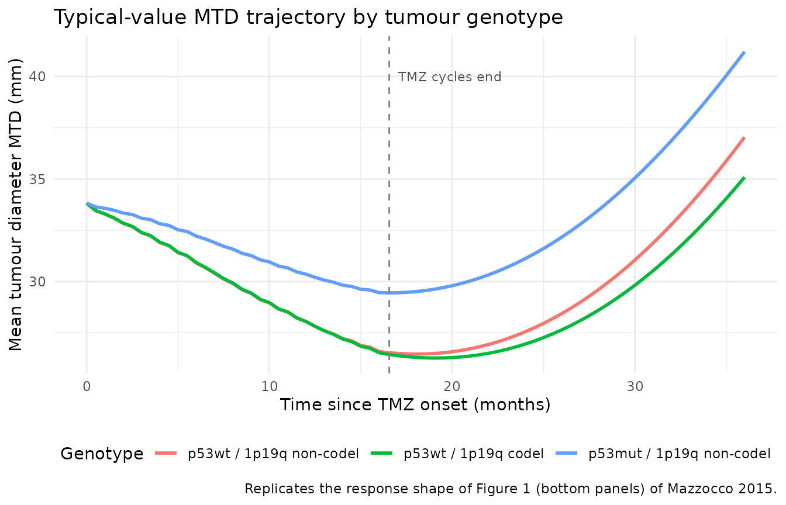
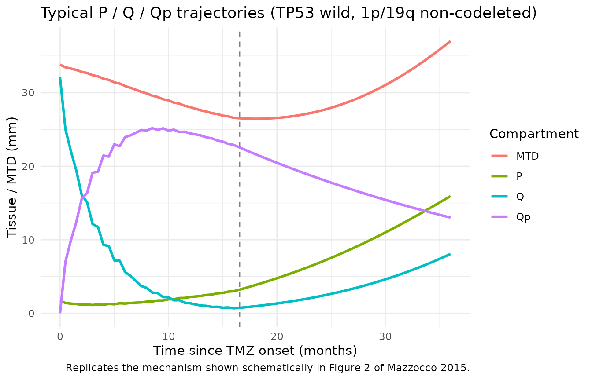
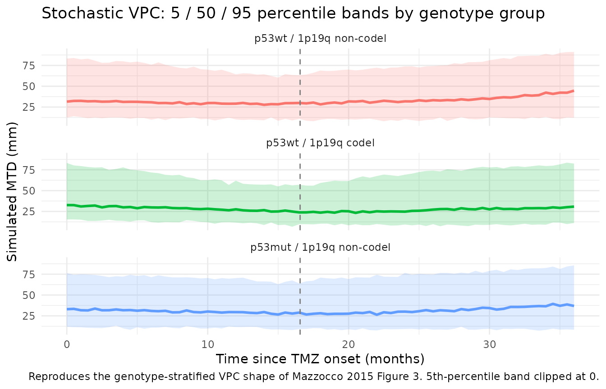

Temozolomide LGG TGI (Mazzocco 2015)
Source:vignettes/articles/Mazzocco_2015_temozolomide.Rmd
Mazzocco_2015_temozolomide.RmdModel and source
- Citation: Mazzocco P, Barthelemy C, Kaloshi G, Lavielle M, Ricard D, Idbaih A, Psimaras D, Renard MA, Alentorn A, Honnorat J, Delattre JY, Ducray F, Ribba B. Prediction of Response to Temozolomide in Low-Grade Glioma Patients Based on Tumor Size Dynamics and Genetic Characteristics. CPT Pharmacometrics Syst Pharmacol. 2015;4(12):728-737. doi:[10.1002/psp4.54](https://doi.org/10.1002/psp4.54).
- Article (open access): https://doi.org/10.1002/psp4.54
This vignette validates the population tumour-growth-inhibition (TGI) model that Mazzocco et al. fit to mean tumour diameter (MTD) measurements from 77 adults with WHO grade II low-grade glioma (LGG) treated with first-line temozolomide (TMZ). The model couples three tumour-tissue compartments (proliferative P, non-damaged quiescent Q, damaged quiescent Qp) with a kinetic-pharmacodynamic (K-PD) virtual drug compartment, and incorporates two tumour-genotype covariates (TP53 mutation status on the TMZ tumour-cell-death constant gamma; 1p/19q codeletion status on the damaged-quiescent-to-proliferative repair constant kQpP).
Population
77 LGG patients (median age 40 years, range 25-71; 45.5% female)
treated with first-line TMZ (200 mg/m^2/day on days 1-5 of each 28-day
cycle, median 18 cycles, range 2-24) at a single French centre between
1999 and 2007. Histology was oligodendroglioma (73%), oligoastrocytoma
(21%), or astrocytoma (6%). Each patient contributed at least one
molecular characteristic (1p/19q codeletion, TP53 / p53 missense
mutation, or IDH mutation); 1p/19q codeletion and TP53 missense mutation
were mutually exclusive in this cohort (Ricard 2007). Tumour size was
measured manually on printed MRI scans as MTD = (2V)^(1/3) where V = (D1
* D2 * D3) / 2. 952 MTD observations total (mean 12 per patient). The
same metadata is available programmatically via
readModelDb("Mazzocco_2015_temozolomide")$population.
Source trace
Equations from Mazzocco 2015 page 731 (the boxed ODE block) and
Figure 2 schematic. Parameter values from Table 2 (final model with both
covariates). The carrying-capacity value K = 100 mm is
inherited from the upstream Ribba 2012 LGG model and provenance-cited
via the on-disk Ribba 2014 review (Table 1 footnote on the Ribba 2012
row).
| Equation / parameter | Value | Source location |
|---|---|---|
d/dt(kpdConc) |
n/a | Mazzocco 2015 p.731: dC/dt = -KDE * C (K-PD construction per Jacqmin 2007) |
d/dt(prolif) |
n/a | Mazzocco 2015 p.731 ODE for dP/dt |
d/dt(quiesc) |
n/a | Mazzocco 2015 p.731 ODE for dQ/dt |
d/dt(quiescDam) |
n/a | Mazzocco 2015 p.731 ODE for dQp/dt |
tumorSize <- prolif + quiesc + quiescDam |
n/a | Mazzocco 2015 p.731 (“P* = P + Q + Qp”); compared to the MTD observations |
lp0 (P0) |
log(1.72) |
Table 2: P0 = 1.72 mm (RSE 21%) |
lq0 (Q0) |
log(32.1) |
Table 2: Q0 = 32.1 mm (RSE 7%) |
llambdap (lambda_P) |
log(0.143) |
Table 2: lambda_P = 0.143 1/month (RSE 12%) |
lkpq (kPQ) |
log(0.0429) |
Table 2: kPQ = 0.0429 1/month (RSE 21%) |
lkqpp (kQpP, non-codel ref) |
log(0.00947) |
Table 2: kQpP 1p/19q non-codeleted = 0.00947 1/month (RSE 42%) |
ldqp (dQp) |
log(0.0188) |
Table 2: dQp = 0.0188 1/month (RSE 19%) |
lgamma (gamma, p53 wild ref) |
log(0.254) |
Table 2: gamma p53 wild = 0.254 unitless (RSE 18%) |
lres (res) |
log(0.1) |
Table 2: res = 0.1 1/month (RSE 22%) |
lkde (KDE) |
fixed(log(8.3)) |
Table 2: KDE = 8.3 1/month FIXED (paper text: 2.5-day half-life equivalent) |
lK |
fixed(log(100)) |
Ribba 2014 review Table 1 footnote: K = 10 cm = 100 mm (upstream Ribba 2012) |
e_p53_gamma |
log(0.143/0.254) = -0.5743 |
Table 2: gamma p53 mutated = 0.143; gamma p53 wild = 0.254 |
e_codel_kqpp |
log(0.00807/0.00947) = -0.1601 |
Table 2: kQpP 1p/19q codeleted = 0.00807; non-codeleted = 0.00947 |
etalp0 |
1.1136 (CV 143%) |
Table 2 CV column; omega^2 = log((CV/100)^2 + 1) |
etalq0 |
0.2712 (CV 55.8%) |
Table 2 CV column |
etallambdap |
0.3352 (CV 63.1%) |
Table 2 CV column |
etalkpq |
0.5045 (CV 81%) |
Table 2 CV column |
etalkqpp |
1.2876 (CV 162%) |
Table 2 CV column |
etaldqp |
0.5556 (CV 86.2%) |
Table 2 CV column |
etalgamma |
0.3857 (CV 68.6%) |
Table 2 CV column |
etalres |
0.4996 (CV 80.5%) |
Table 2 CV column |
etalkde |
fixed(0.2231) (CV 50% FIXED) |
Table 2 CV column |
addSd (a) |
1.73 |
Table 2: a = 1.73 mm (RSE 3%, constant error model) |
| TMZ cycle interval | 28 days = 0.9203 months | Mazzocco 2015 Methods: “The drug was administered for 5 consecutive days (day 1 to day 5) every 28 days at a daily dose of 200 mg/m^2.” |
Virtual cohort
The published cohort split (Table 1, internal-analysis column) by p53
status was 24 mutant / 35 wild-type (and 18 unknown), and by 1p/19q
status was 23 codeleted / 47 non-codeleted (and 7 unknown). Because the
two markers are mutually exclusive in this cohort, only three combined
genotype groups are biologically plausible: (TP53-wild,
1p/19q-codeleted), (TP53-wild, 1p/19q-non-codeleted), and (TP53-mutant,
1p/19q-non-codeleted). The virtual cohort below uses 50 subjects in each
of those three groups (150 total). TMZ dosing follows the published
protocol – 18 monthly cycles at 28-day intervals (= 0.9203 months), one
K-PD bolus per cycle, dose magnitude amt = 1 (arbitrary;
the source paper’s gamma absorbs the dose units). The simulation horizon
is 36 months to cover both the median treatment duration (~17 months)
and a post-treatment follow-up window long enough to expose the
acquired-resistance dynamics and the slow post-cessation MTD evolution
highlighted in Figure 1 (top-right).
set.seed(2015)
cycle_interval_months <- 28 / (365.25 / 12) # 0.9203 months
n_cycles <- 18L # paper's median
treatment_end_month <- cycle_interval_months * n_cycles
followup_horizon <- 36 # months
obs_times <- seq(0, followup_horizon, by = 0.5)
dose_times <- cycle_interval_months * seq.int(0L, n_cycles - 1L)
n_per_group <- 50L
geno_groups <- tibble::tribble(
~genotype_label, ~TUM_TP53_MUT, ~TUM_1P19Q_CODEL,
"p53wt / 1p19q non-codel", 0L, 0L,
"p53wt / 1p19q codel", 0L, 1L,
"p53mut / 1p19q non-codel", 1L, 0L
)
make_cohort <- function(genotype_label, TUM_TP53_MUT, TUM_1P19Q_CODEL, id_offset) {
ids <- id_offset + seq_len(n_per_group)
per_subject <- tibble(
id = ids,
TUM_TP53_MUT = TUM_TP53_MUT,
TUM_1P19Q_CODEL = TUM_1P19Q_CODEL,
genotype_label = genotype_label
)
doses <- per_subject |>
tidyr::crossing(time = dose_times) |>
mutate(evid = 1L, amt = 1, cmt = "kpdConc")
obs <- per_subject |>
tidyr::crossing(time = obs_times) |>
mutate(evid = 0L, amt = 0, cmt = NA_character_)
bind_rows(doses, obs) |>
arrange(id, time, desc(evid))
}
events <- bind_rows(
make_cohort("p53wt / 1p19q non-codel", 0L, 0L, id_offset = 0L),
make_cohort("p53wt / 1p19q codel", 0L, 1L, id_offset = n_per_group),
make_cohort("p53mut / 1p19q non-codel", 1L, 0L, id_offset = 2L * n_per_group)
) |>
mutate(genotype_label = factor(
genotype_label,
levels = c("p53wt / 1p19q non-codel", "p53wt / 1p19q codel", "p53mut / 1p19q non-codel")
))
stopifnot(!anyDuplicated(unique(events[, c("id", "time", "evid")])))
nrow(events); n_distinct(events$id)
#> [1] 13650
#> [1] 150Typical-value simulation (replicates the response shapes from Figure 1)
A typical-value simulation (zeroRe(): no IIV, no
residual error) shows the structural response shape Mazzocco 2015
highlights in Figure 1 (bottom panels): an initial MTD drop driven by
the TMZ effect on both P and Q tissues, followed by a slow rebound as
the proliferative-tissue drug effect decays via exp(-res*t)
and the damaged-quiescent compartment Qp repairs back to P at rate
kQpP.
mod <- readModelDb("Mazzocco_2015_temozolomide")
mod_typ <- mod |> rxode2::zeroRe()
#> ℹ parameter labels from comments will be replaced by 'label()'
sim_typ <- rxode2::rxSolve(
mod_typ,
events = events,
keep = c("genotype_label", "TUM_TP53_MUT", "TUM_1P19Q_CODEL")
) |>
as.data.frame()
#> ℹ omega/sigma items treated as zero: 'etalp0', 'etalq0', 'etallambdap', 'etalkpq', 'etalkqpp', 'etaldqp', 'etalgamma', 'etalres', 'etalkde'
#> Warning: multi-subject simulation without without 'omega'
typ_summary <- sim_typ |>
group_by(genotype_label, time) |>
summarise(median_MTD = median(tumorSize), .groups = "drop")
ggplot(typ_summary, aes(time, median_MTD, colour = genotype_label)) +
geom_line(linewidth = 1) +
geom_vline(xintercept = treatment_end_month, linetype = "dashed", colour = "grey50") +
annotate("text", x = treatment_end_month + 0.5, y = 40,
label = "TMZ cycles end", hjust = 0, colour = "grey30", size = 3) +
labs(x = "Time since TMZ onset (months)", y = "Mean tumour diameter MTD (mm)",
colour = "Genotype",
title = "Typical-value MTD trajectory by tumour genotype",
caption = "Replicates the response shape of Figure 1 (bottom panels) of Mazzocco 2015.") +
theme_minimal() +
theme(legend.position = "bottom")
Plotting the three tumour-tissue compartments alongside the total
tumorSize exposes the underlying mechanism: under TMZ, Q
drains rapidly into Qp (damaged quiescent), MTD falls; once
exp(-res*t) has decayed the proliferative-tissue effect, P
regrows and kQpP repairs Qp back to P, giving the slow rebound.
comp_typ <- sim_typ |>
filter(genotype_label == "p53wt / 1p19q non-codel") |>
group_by(time) |>
summarise(P = median(prolif),
Q = median(quiesc),
Qp = median(quiescDam),
MTD = median(tumorSize),
.groups = "drop") |>
pivot_longer(c(P, Q, Qp, MTD), names_to = "state", values_to = "value") |>
mutate(state = factor(state, levels = c("MTD", "P", "Q", "Qp")))
ggplot(comp_typ, aes(time, value, colour = state)) +
geom_line(linewidth = 1) +
geom_vline(xintercept = treatment_end_month, linetype = "dashed", colour = "grey50") +
labs(x = "Time since TMZ onset (months)", y = "Tissue / MTD (mm)",
colour = "Compartment",
title = "Typical P / Q / Qp trajectories (TP53 wild, 1p/19q non-codeleted)",
caption = "Replicates the mechanism shown schematically in Figure 2 of Mazzocco 2015.") +
theme_minimal()
Stochastic simulation with IIV
Including IIV across all parameters (CV 50-162% per Table 2) and the additive residual error gives a VPC-style envelope analogous to Mazzocco 2015 Figure 3 (which stratifies by p53 and 1p/19q status). The 5th, 50th, and 95th percentile bands below are computed across the 50 simulated subjects per genotype group.
sim_iiv <- rxode2::rxSolve(
mod,
events = events,
keep = c("genotype_label", "TUM_TP53_MUT", "TUM_1P19Q_CODEL")
) |>
as.data.frame()
#> ℹ parameter labels from comments will be replaced by 'label()'
vpc_summary <- sim_iiv |>
group_by(genotype_label, time) |>
summarise(
Q05 = quantile(sim, 0.05, na.rm = TRUE),
Q50 = quantile(sim, 0.50, na.rm = TRUE),
Q95 = quantile(sim, 0.95, na.rm = TRUE),
.groups = "drop"
)
ggplot(vpc_summary, aes(time, Q50, colour = genotype_label, fill = genotype_label)) +
geom_ribbon(aes(ymin = pmax(Q05, 0), ymax = Q95), alpha = 0.2, colour = NA) +
geom_line(linewidth = 1) +
facet_wrap(~ genotype_label, ncol = 1) +
geom_vline(xintercept = treatment_end_month, linetype = "dashed", colour = "grey50") +
labs(x = "Time since TMZ onset (months)", y = "Simulated MTD (mm)",
title = "Stochastic VPC: 5 / 50 / 95 percentile bands by genotype group",
caption = "Reproduces the genotype-stratified VPC shape of Mazzocco 2015 Figure 3. 5th-percentile band clipped at 0.") +
theme_minimal() +
guides(colour = "none", fill = "none")
Tumour-genotype covariate effects (replicates Mazzocco 2015 Results)
The paper’s two retained covariate effects are:
-
TP53 mutation reduces TMZ efficacy: the
typical-value gamma in TP53-mutant tumours is
0.143 / 0.254 = 0.563of the TP53-wild-type value, i.e. TMZ is 44% less effective in mutant tumours (Mazzocco 2015 Results, p.731-732). The typical-value simulation reproduces this as a shallower MTD nadir and an earlier rebound in the TP53-mutant arm. -
1p/19q codeletion lowers kQpP: the typical-value
kQpP in 1p/19q-codeleted tumours is
0.00807 / 0.00947 = 0.852of the non-codeleted value, i.e. damaged quiescent cells take ~15% longer to repair back to proliferating. The typical-value simulation reproduces this as a deeper / longer MTD response in the codeleted arm (the Mazzocco 2015 finding that codeleted patients have longer response duration).
typ_metrics <- sim_typ |>
group_by(id, genotype_label) |>
summarise(
baseline_MTD = first(tumorSize),
min_MTD = min(tumorSize),
time_min_MTD = time[which.min(tumorSize)],
.groups = "drop"
) |>
group_by(genotype_label) |>
summarise(
typical_baseline_MTD = mean(baseline_MTD),
typical_min_MTD = mean(min_MTD),
typical_pct_drop = mean((baseline_MTD - min_MTD) / baseline_MTD * 100),
typical_time_min = mean(time_min_MTD),
.groups = "drop"
)
knitr::kable(
typ_metrics,
digits = 2,
caption = paste(
"Typical-value response metrics by genotype: baseline MTD,",
"minimum MTD, percentage drop from baseline, and time to minimum (months)."
)
)| genotype_label | typical_baseline_MTD | typical_min_MTD | typical_pct_drop | typical_time_min |
|---|---|---|---|---|
| p53wt / 1p19q non-codel | 33.82 | 26.46 | 21.76 | 18.0 |
| p53wt / 1p19q codel | 33.82 | 26.27 | 22.33 | 19.0 |
| p53mut / 1p19q non-codel | 33.82 | 29.45 | 12.93 | 16.5 |
Mechanistic sanity checks
This is a tumour-size-dynamics PD model with no drug-concentration / dose / AUC observation – PKNCA-based validation is not the appropriate gate (there is no plasma concentration to integrate). The mechanistic checks below catch the failure modes that would actually break this class of model.
1. Baseline (t = 0) matches Table 2
At t = 0 the typical-value MTD equals
P0 + Q0 = 1.72 + 32.1 = 33.82 mm. Round-trip through
rxSolve and verify.
baseline_check <- sim_typ |>
filter(time == 0) |>
group_by(genotype_label) |>
summarise(baseline_MTD = unique(tumorSize), .groups = "drop")
knitr::kable(
baseline_check,
digits = 3,
caption = "Typical-value baseline MTD equals P0 + Q0 = 33.82 mm in every genotype group."
)| genotype_label | baseline_MTD |
|---|---|
| p53wt / 1p19q non-codel | 33.82 |
| p53wt / 1p19q codel | 33.82 |
| p53mut / 1p19q non-codel | 33.82 |
2. K-PD compartment decays at rate KDE
After a single TMZ-cycle bolus of amt = 1 at
t = 0, the K-PD compartment should decay as
kpdConc(t) = exp(-KDE * t) with
KDE = 8.3 / month, giving a half-life of
log(2) / 8.3 = 0.0835 month = 2.54 days. Check the
early-time decay of a single-cycle simulation.
single_dose_events <- tibble(
id = 1L,
TUM_TP53_MUT = 0L,
TUM_1P19Q_CODEL = 0L
) |>
tidyr::crossing(time = c(0, seq(0.005, 0.5, by = 0.005))) |>
mutate(evid = 0L, amt = 0, cmt = NA_character_)
single_dose_events <- bind_rows(
tibble(id = 1L, TUM_TP53_MUT = 0L, TUM_1P19Q_CODEL = 0L,
time = 0, evid = 1L, amt = 1, cmt = "kpdConc"),
single_dose_events
) |>
arrange(time, desc(evid))
sim_kde <- rxode2::rxSolve(mod_typ, events = single_dose_events) |>
as.data.frame() |>
filter(time > 0) |>
mutate(predicted = exp(-8.3 * time))
#> ℹ omega/sigma items treated as zero: 'etalp0', 'etalq0', 'etallambdap', 'etalkpq', 'etalkqpp', 'etaldqp', 'etalgamma', 'etalres', 'etalkde'
kde_check <- sim_kde |>
select(time, kpdConc, predicted) |>
head(10)
knitr::kable(
kde_check,
digits = 4,
caption = "Simulated kpdConc(t) vs analytic exp(-KDE * t) over the first 0.05 months (~1.5 days)."
)| time | kpdConc | predicted |
|---|---|---|
| 0.005 | 0.9593 | 0.9593 |
| 0.010 | 0.9204 | 0.9204 |
| 0.015 | 0.8829 | 0.8829 |
| 0.020 | 0.8470 | 0.8470 |
| 0.025 | 0.8126 | 0.8126 |
| 0.030 | 0.7796 | 0.7796 |
| 0.035 | 0.7479 | 0.7479 |
| 0.040 | 0.7175 | 0.7175 |
| 0.045 | 0.6883 | 0.6883 |
| 0.050 | 0.6603 | 0.6603 |
3. Carrying capacity cap prevents runaway growth
In the absence of treatment, the proliferative tissue grows
logistically with rate lambda_P = 0.143 /month toward the
carrying capacity K = 100 mm. With no doses applied, the
typical-value tumorSize must remain bounded above by
K.
no_dose_events <- tibble(
id = 1L,
TUM_TP53_MUT = 0L,
TUM_1P19Q_CODEL = 0L
) |>
tidyr::crossing(time = seq(0, 240, by = 1)) |> # 20-year horizon
mutate(evid = 0L, amt = 0, cmt = NA_character_)
sim_cap <- rxode2::rxSolve(mod_typ, events = no_dose_events) |>
as.data.frame()
#> ℹ omega/sigma items treated as zero: 'etalp0', 'etalq0', 'etallambdap', 'etalkpq', 'etalkqpp', 'etaldqp', 'etalgamma', 'etalres', 'etalkde'
knitr::kable(
sim_cap |> filter(time %in% c(0, 12, 24, 60, 120, 240)) |>
select(time, tumorSize, prolif, quiesc, quiescDam),
digits = 3,
caption = "Typical untreated trajectory (no TMZ doses) over a 20-year horizon. MTD asymptotes below K = 100 mm."
)| time | tumorSize | prolif | quiesc | quiescDam |
|---|---|---|---|---|
| 0 | 33.820 | 1.720 | 32.100 | 0 |
| 12 | 36.453 | 3.135 | 33.318 | 0 |
| 24 | 40.857 | 5.384 | 35.473 | 0 |
| 60 | 64.440 | 13.705 | 50.735 | 0 |
| 120 | 86.603 | 6.582 | 80.021 | 0 |
| 240 | 90.471 | 0.231 | 90.240 | 0 |
4. Dimensional analysis of the ODE
| Term | Units | Reduces to |
|---|---|---|
lambdap * prolif |
1/month * mm |
mm / month |
(1 - tumorSize / K) |
unitless | unitless |
kqpp * quiescDam |
1/month * mm |
mm / month |
kpq * prolif |
1/month * mm |
mm / month |
gamma * kde * kpdConc * prolif |
unitless * 1/month * AU * mm |
mm / month (AU absorbed into gamma) |
gamma * kde * kpdConc * quiesc |
same | mm / month |
dqp * quiescDam |
1/month * mm |
mm / month |
kde * kpdConc |
1/month * AU |
AU / month |
All three tumour-tissue ODE right-hand sides reduce to
mm / month, consistent with d/dt(state) where
the states are in mm and t is in months. The
K-PD compartment is in arbitrary units (AU) whose scale is absorbed into
the typical-value gamma – changing the dose magnitude from
amt = 1 to amt = 10 scales
kpdConc ten-fold but the published value of
gamma = 0.254 was estimated against the source paper’s
amt = 1 convention, so the dose magnitude is
load-bearing.
Assumptions and deviations
-
Carrying capacity
K = 100 mmis upstream from Ribba 2012. Mazzocco 2015 Table 2 reports only seven structural parameters plus two initial conditions; the carrying-capacity value is inherited (without being re-listed) from the predecessor Ribba 2012 LGG TGI model. The Ribba 2012 PDF is not on disk for this extraction; the on-disk Ribba 2014 review (doi:10.1038/psp.2014.12, PMID 24622904) records the value in its Table 1 footnote on the Ribba 2012 row: “theta was not estimated and was fixed to 10 cm”. The model file pins the value vialK <- fixed(log(100))and cites the provenance in thereferenceblock. -
K-PD dose magnitude convention. Mazzocco 2015
represents each 28-day TMZ cycle (five daily 200 mg/m^2 doses on days
1-5) as a single bolus into the virtual drug compartment C; the source
paper does not publish an explicit dose value. The model file is
calibrated to
amt = 1per cycle, which is the convention used by the upstream Ribba 2012 K-PD parameterisation that Mazzocco 2015 builds on. Users supplying a differentamtmagnitude will see proportionally rescaledkpdConctrajectories; to preserve the published efficacy magnitude with a different dose unit, scalegammaby the same factor. -
Resistance-clock origin. The drug-effect resistance
term
exp(-res * t)is built on the rxode2 simulation timet. The paper measurestfrom TMZ start (the K-PD compartment C is zero before treatment). Users with pretreatment observations should putt = 0at the start of TMZ therapy and use negative times for pretreatment scans; the drug-effect term isgamma * kde * C * exp(-res*t)and reduces to zero fort < 0becauseC(0) = 0. -
checkModelConventions()deviations (intentional). Runningnlmixr2lib::checkModelConventions("Mazzocco_2015_temozolomide")flags four warnings (no errors): (1) compartmentkpdConcis not on the canonical-compartment list; (2) compartmentsprolif,quiesc,quiescDamare not on the canonical-compartment list; (3) the single-output observation variable should beCc; (4)units$concentrationdoes not contain a per-volume/(the observation is a tumour diameter, not a drug concentration). All four are intrinsic to a tumour-size-dynamics model with no drug-concentration ODE. The same deviations apply to every other tumour-size-dynamics model in the package (e.g.,tgi_sat_logistic,oncology_xenograft_simeoni_2004,Ouerdani_2015_pazopanib,Zecchin_2016_tumorovarian). -
Genotype mutual exclusivity not enforced by the
model. Mazzocco 2015 Methods note that TP53 missense mutation
and 1p/19q codeletion are mutually exclusive in their cohort. The model
file does not enforce that constraint at the parameter level – users
with the rare double-mutant case will see compounded covariate effects
(both
e_p53_gammaande_codel_kqppapplied); the typical-value cohort in this vignette therefore omits the double-mutant combination. -
PKNCA validation is omitted. This is a
tumour-size-dynamics PD model with no drug-concentration ODE – there is
nothing for PKNCA to integrate. The vignette substitutes the
mechanistic-sanity checks above (baseline match, K-PD decay rate,
carrying-capacity cap, dimensional analysis), matching the validation
pattern other tumour-size models in the package use (e.g.,
Ouerdani_2015_pazopanib_mouse,Zecchin_2016_tumorovarian).